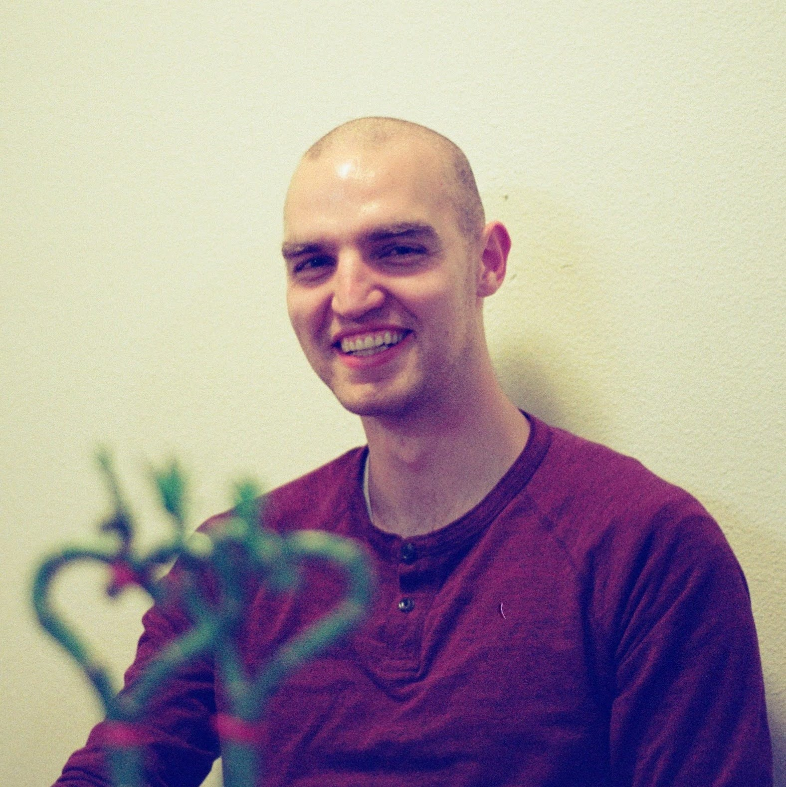

 I’m a graduate student at Texas A&M University, under the direction of Dr. James Hubbard and Dr. Mark Balas at the Morpheus lab. I’m very interested in improving how humans and machines work together, especially in safety critical environments. Currently, we are exploring a quantum-like framework for human state estimation as a method to mitigate the autonomy conundrum. You can read more about this approach on this site here and here.
My guitars, dairy based sweets, and all things motorsport keep me busy away from the lab, and I regularly support local programs focused on children’s education. The ultimate dream is to leave the research community after a long career with positve impact, and open my very theoretical bakery, Yeast Common Denominator. For now, I run this site as a way to improve my communication skills.
| github |